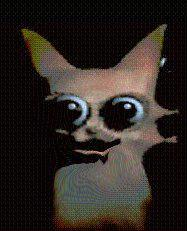

Toca la pantalla para abrir a la de yayaya en fa yayayyaya abre este coso jija de la wayaba
FELI PUMPE
Q WAPA ESTÁ LA CUMPLEAÑERA KRAJO
ya 19 añotes qepedo si yo te acompañé a sakar tu ine y k te viste pelleja saliendo de las oficinas y q te conocí a los 17 y y y y y yy quepedo mucho tiempo pero tan bonito todo jeje

A pesar de la distancia, siento que no se pierde esa confianza que tenemos para contarnos las cosas y ser tal como somos.
Te quiero muchísimo y aunque a veces me cueste poner en palabras lo que siento por ti, trato de demostrártelo con cariño y
con los detalles o regalos que te he dado. Entiendo tus momentos difíciles y sé que tienes tu vida aparte, pero quiero que aun así yo quiero ser parte de tu vida.
La confianza que hemos construido con el tiempo y todo lo que ha pasado entre nosotros nos acerca de una forma que va más allá de lo que se puede expresar: más cerca que un abrazo, más cerca que unos mimos, caricias o besos.
Quiero seguir mejorando para que estés con una mejor versión de mí, que sea constante, pero sin dejar de ser quien soy y no porque quiera parecer perfecto ante tus ojos, sino porque tu mereces que dé lo mejor de mí.
FELI PUMPEEEE, pásala de eggs hoi con tus amijos y espero q este día lo tomes bien y si me lo permites, estaré contigo en cada cumpleaños q pueda :D